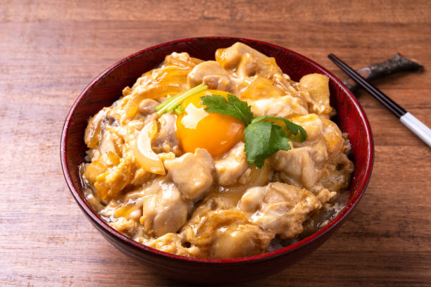

Oyakodon

Oyakodon
I live in Japan and this recipe has saved my stomach,
and my wallet, many a times. It is simple, delicious, and
cost effective!
This recipe comes from my girlfriend and her family.
We eat it fairly reguarly in our house and is great when you want something easy
to throw together.
I hope you enjoy this simple and classic Japanese dish.
Ingredients
- Rice x 2 scoops
- Chicken Breast x
- Mirin x 2 tablespoons
- Soy Sauce x 2 tablespoons
- Sugar x 2 tablespoons
- Large Onion x 1
- Large Egg x 3
- Water x 200ml
Steps
- Rinse and start 2 cups of rice.
- Chop one full onion and set it aside.
- Chop the chicken breast into small, bite-sized chunks.
- Heat a pot and add 2 tablespoons of oil.
- Add the chicken and onion and cook on medium heat for about 5 minutes.
- Add the sauces and sugar and mix until chicken and onions are browned.
- Add the water and cook on low for about 5 minutes.
- Whisk the eggs and pour half into the pot. Let it sit covered
on low heat for about 30 seconds. Then pour the rest in and cook uncovered.
Once the egg is fully cooked serve over rice and enjoy!
Home